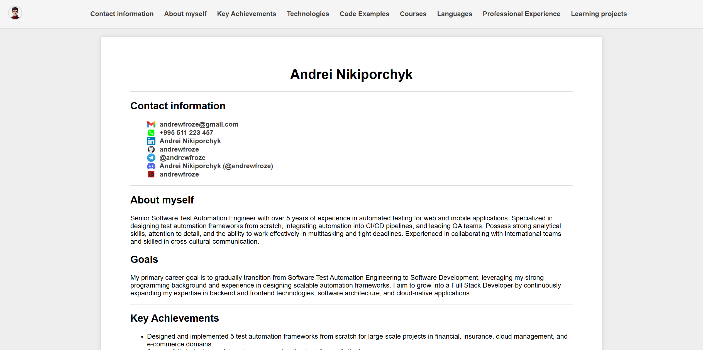

Andrei Nikiporchyk
Contact information
About myself
Senior Software Test Automation Engineer with over 5 years of experience in automated testing for web and mobile applications. Specialized in designing test automation frameworks from scratch, integrating automation into CI/CD pipelines, and leading QA teams. Possess strong analytical skills, attention to detail, and the ability to work effectively in multitasking and tight deadlines. Experienced in collaborating with international teams and skilled in cross-cultural communication.
Goals
My primary career goal is to gradually transition from Software Test Automation Engineering to Software Development, leveraging my strong programming background and experience in designing scalable automation frameworks. I aim to grow into a Full Stack Developer by continuously expanding my expertise in backend and frontend technologies, software architecture, and cloud-native applications.
Key Achievements
- Designed and implemented 5 test automation frameworks from scratch for large-scale projects in financial, insurance, cloud management, and e-commerce domains.
- Successfully led a team of 4 engineers, ensuring timely delivery of all releases.
- Introduced visual testing and quality metrics, reducing production defects by 30%.
- Optimized CI/CD processes, reducing test execution time by 25%.
Technologies
- Testing Types: Regression, Smoke, Integration, API, UI, E2E, Performance Testing
- Methodologies: SDLC, Test Plan/Strategy Development, Agile (Scrum, Kanban)
- Programming Languages: Java, Kotlin, C#, Python
- Frameworks: Selenium, Selenide, Playwright, REST Assured, Appium, TestNG, JUnit, NUnit, Pytest
- CI/CD: Jenkins, GitHub Actions, GitLab CI, Azure DevOps
- Tools: Postman, Charles Proxy, Allure, ReportPortal
- Test Management: Zephyr, Xray, TestRail, ADO Test Plans
- Version Control: Git, GitHub, GitLab, BitBucket, Azure DevOps
- Cloud / DB: AWS (S3, SDK), Azure SDK, PostgreSQL, Hibernate, Microsoft SQL Server
- Other: IntelliJ IDEA, Android Studio, Visual Studio, Xcode, Slack API
Code Examples
Kata:
Optimal Snakes and Ladders
Task: Calculate the minimum rolls needed for a player to complete a game of Snakes and Ladders.
Courses
- Self study of JavaScript basics on javascript.ru
- RS Schools Course «JavaScript/Front-end. Stage 0» (in progress)
Languages
- English - B2 (In progress)
- Russian – Native
Professional Experience
SiliconMint, Georgia
Senior Software Test Automation Engineer
Oct 2025 – May 2026
Project 1 – Cloud Management Platform
Oct 2025 – May 2026
- Built a test automation framework from scratch covering API, UI (Playwright), and cloud resource collector testing for AWS and Azure.
- Implemented 80+ API tests across authentication, projects, tasks, prompts, chat, and widget endpoints with full regression and healthcheck suites.
- Developed 40+ UI test scenarios with Page Object Model, parallel execution, and Allure reporting with screenshots and video on failure.
- Created E2E collector comparison tests verifying AWS and Azure resource discovery against database state (Hibernate + PostgreSQL).
- Integrated Slack notifications with per-failure screenshots, summary reports, and automated channel cleanup.
- Configured GitLab CI/CD pipeline with scheduled nightly runs for API and UI suites.
Technologies: Java 21, Gradle, TestNG, Playwright, REST Assured, Hibernate, PostgreSQL, AWS SDK, Azure SDK, Allure, Slack API, GitLab CI
EPAM Systems, Georgia
Senior Software Test Automation Engineer
Apr 2021 – Sep 2025
Project 1 – Financial Services Domain
Feb 2025 – Sep 2025
- Designed and implemented a robust test automation framework for REST and WebSocket APIs, achieving 85% test coverage.
- Conducted 10+ regression test runs, identifying and resolving critical defects before production releases.
- Created detailed and comprehensive bug reports, accelerating issue resolution by 20%.
Technologies: Java 21, Gradle, TestNG, Selenide, REST Assured, AWS S3, Allure, Xray
Project 2 – Insurance Domain
May 2024 – Dec 2024
- Built test automation frameworks for UI and API testing from scratch, reducing test execution time by 30%.
- Developed 50+ test scenarios based on requirements, ensuring full functionality coverage.
- Configured CI/CD pipelines for automated test execution, reducing manual effort by 40%.
Technologies: Java 17, REST Assured, Selenium, NUnit, Gradle, Azure DevOps
Project 3 – E-commerce Domain
Mar 2024 – Apr 2024
- Diagnosed and fixed 30+ broken UI tests in the regression suite, improving test stability by 40%.
- Executed 5 regression test runs during release cycles, ensuring smooth and error-free deployments.
Technologies: Java 17, Appium, Selenide, BrowserStack, TestNG, Jenkins
Project 4 – E-commerce Domain
Jan 2024 – Feb 2024
- Increased automation coverage for Android UI sanity tests by 30%, reducing manual testing efforts.
- Analyzed automated test results and provided detailed reports to stakeholders.
Technologies: Kotlin, Java 17, Espresso, Charles Proxy, Gradle, Android Studio
Project 5 – Retail Domain
Oct 2021 – Nov 2023
- Developed a multi-level test automation framework from scratch shared between 3 development teams.
- Configured ReportPortal for test result visualization, improving transparency for stakeholders.
- Led a team of 5 engineers, onboarding and mentoring new team members.
- Conducted UI performance testing, identifying bottlenecks and improving performance by 15%.
Technologies: TestNG, Selenide, REST Assured, Appium, Sauce Labs, ReportPortal
Project 6 – Internal Analytics Platform
Apr 2021 – Sep 2022
- Refactored and optimized an existing test automation framework, reducing test execution time by 20%.
- Suggested and introduced API testing into existing test automation processes.
- Configured ReportPortal for automated reporting, streamlining test result analysis.
Technologies: TestNG, Selenide, REST Assured, PostgreSQL, GitLab CI
Learning projects
